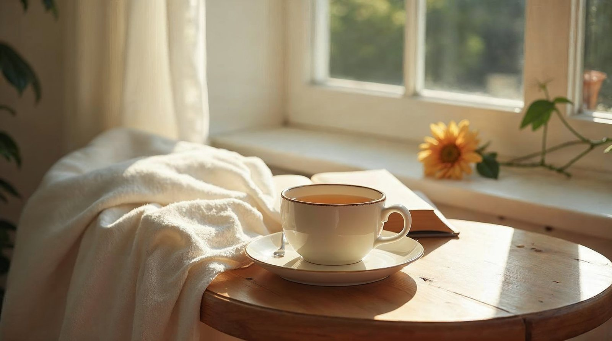
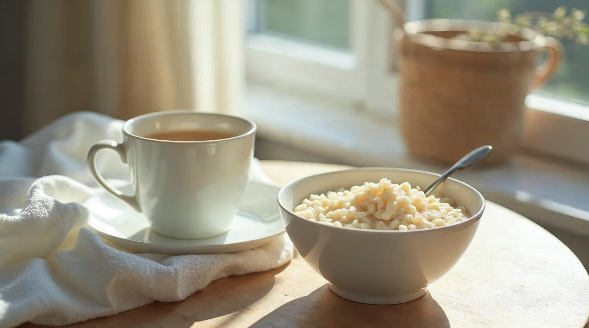
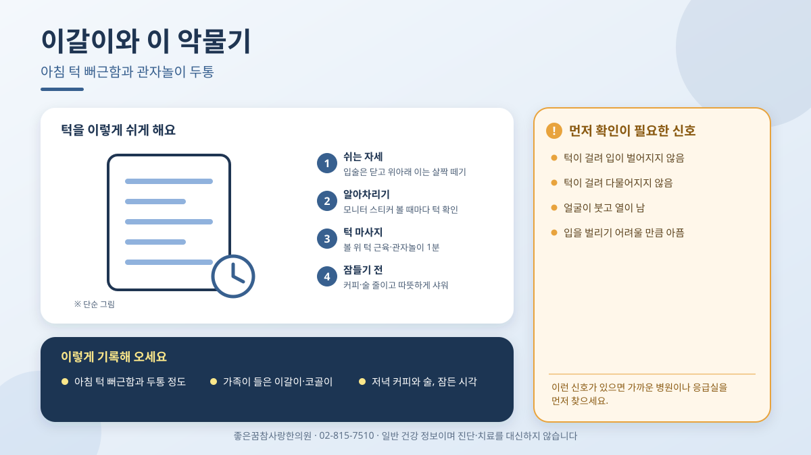

이종호 한의사 감수좋은꿈참사랑한의원 대표원장 (한의사 면허번호 19769)발행 2026-11-26 · 수정 2026-11-26
이 글의 차례
새벽, 옆에서 자던 가족이 뽀드득 하는 소리에 잠이 깹니다. 아침에 "어젯밤에 이 엄청 갈더라"는 말을 듣지만 본인은 전혀 기억이 없습니다. 그런데 생각해 보면 요즘 아침마다 턱이 묵직하고, 관자놀이가 지끈거리며, 찬물을 마시면 이가 시린 날이 늘었습니다.
진료실에서는 이렇게 가족의 말을 듣고 오시는 분, 치과에서 이가 닳았다는 말을 듣고 오시는 분, 턱과 두통 때문에 오셨다가 이갈이를 알게 되는 분을 자주 만납니다. 자는 동안 일어나는 일이라 본인이 알아채기 어렵다는 것이 이갈이의 가장 큰 특징입니다.
낮에도 비슷한 일이 일어납니다. 컴퓨터 앞에서 집중하거나 운전할 때, 화가 나거나 긴장할 때 나도 모르게 이를 꽉 물고 있는 분이 많습니다. 밤의 이갈이와 낮의 이 악물기는 서로 이어져 있는 경우가 많아서 함께 살펴보는 것이 좋습니다.
이갈이와 이 악물기는 어떻게 다른가요?
이갈이는 위아래 이를 맞댄 채 좌우나 앞뒤로 문지르는 움직임입니다. 소리가 나기 때문에 함께 자는 가족이 먼저 알아채는 경우가 많습니다. 주로 잠든 동안 일어나며, 하룻밤에도 여러 번 짧게 되풀이됩니다.
이 악물기는 소리 없이 이를 꽉 무는 것입니다. 소리가 나지 않아 가족도 모르는 경우가 많고, 낮에 집중하거나 긴장할 때도, 밤에 잠든 동안에도 일어납니다. 소리는 없지만 턱 근육에 걸리는 힘은 이갈이 못지않게 큽니다.
두 가지 모두 턱 근육을 쉬지 못하게 하고, 치아와 턱관절에 반복해서 부담을 줍니다. 어떤 분은 이갈이가, 어떤 분은 이 악물기가 중심이고, 두 가지를 함께 하는 분도 많습니다.
몸에는 어떤 흔적이 남나요?
가장 흔한 흔적은 아침의 턱 뻐근함입니다. 밤새 일한 턱 근육이 피로해 입을 벌릴 때 묵직하거나, 씹을 때 쉽게 지칩니다. 관자놀이와 귀 앞쪽이 지끈거리는 두통도 자주 함께 옵니다.
치아에도 흔적이 남습니다. 오래 이어지면 이 끝이 평평하게 닳거나, 잇몸 가까운 곳이 패이고, 찬물에 이가 시리거나, 때로는 이에 금이 가기도 합니다. 혀 가장자리에 이 자국이 물결처럼 나 있거나, 볼 안쪽에 하얀 줄이 생기는 분도 계십니다.
목과 어깨도 영향을 받습니다. 턱 근육과 목 근육은 서로 이어져 있어서, 이를 꽉 무는 습관이 있으면 뒷목과 어깨가 함께 굳기 쉽습니다. 거꾸로 목과 어깨가 굳어 있으면 턱에도 힘이 더 들어가는 고리가 생깁니다.
왜 자면서 이를 갈까요
이갈이의 원인은 한 가지로 정리하기 어렵지만, 여러 갈래의 이유가 겹친다고 봅니다. 가장 흔히 함께 이야기되는 것은 긴장입니다. 낮 동안 풀리지 않은 긴장이 잠든 뒤에도 턱 근육으로 이어지면서, 몸이 그 긴장을 이를 가는 방식으로 내보낸다고 이해할 수 있습니다.
잠의 질도 관련이 있습니다. 이갈이는 깊은 잠보다 얕은 잠에서, 특히 잠이 살짝 깨려는 순간에 많이 나타납니다. 잠이 얕고 자주 깨는 분, 코골이나 수면무호흡이 있는 분에게서 이갈이가 더 자주 관찰되기도 합니다.
생활 습관도 영향을 줍니다. 저녁 늦게 마시는 커피나 술, 담배는 잠을 얕게 하고 근육의 긴장을 높여 이갈이를 부추길 수 있습니다. 일부 약이 이갈이와 관련될 수 있어, 드시는 약이 있다면 함께 살펴봅니다.
한의학에서는 이갈이를 열이 위로 몰리거나 근육을 부드럽게 하는 기운이 부족해 턱이 긴장하는 흐름으로 보기도 합니다. 긴장하면 얼굴로 열이 오르고, 입이 마르며, 꿈이 많고 잠이 얕은 모습이 함께 있는지 진료에서 살핍니다.
이갈이가 유난히 심해지는 때가 있나요?
이갈이는 늘 같은 세기로 일어나지 않습니다. 마감이 몰린 주, 이사나 이직처럼 생활이 크게 바뀐 때, 시험이나 중요한 일을 앞둔 때에 가족이 "요즘 더 심하다"고 말하는 경우가 많습니다. 긴장이 쌓인 시기와 이갈이가 함께 움직이는 것입니다.
술을 마신 날, 늦게까지 화면을 보다 잠든 날, 피곤해서 옷도 못 갈아입고 쓰러지듯 잠든 날에도 이갈이가 심해지기 쉽습니다. 잠이 얕아지고 몸이 충분히 풀리지 못한 채 잠들기 때문입니다.
계절로는 추운 겨울에 턱 뻐근함을 더 많이 호소하십니다. 추위에 몸이 움츠러들면 어깨와 목, 턱에 힘이 더 들어가기 때문입니다. 잠자리를 따뜻하게 하고 목을 감싸 주는 것만으로도 아침 턱 상태가 조금 달라질 수 있습니다.
턱관절 장애, 치아 문제와는 어떻게 나눠 보나요
입을 벌릴 때 딱딱 소리가 나거나, 입이 잘 벌어지지 않거나, 턱이 한쪽으로 비뚤어지며 벌어진다면 턱관절 장애를 함께 살펴야 합니다. 이갈이가 턱관절 장애를 부추기기도 하고, 둘이 함께 있는 경우도 많습니다.
한쪽 이만 계속 시리거나 아프다면 충치나 잇몸 문제, 금 간 치아처럼 치과에서 확인할 문제가 먼저일 수 있습니다. 이가 닳은 정도와 치아 상태는 치과에서 정확히 볼 수 있으니, 이갈이를 알게 되면 치과 진료를 함께 받아 보시길 권합니다.
치과에서는 필요하면 밤에 끼우는 마우스가드를 맞춰 치아를 보호합니다. 마우스가드는 이를 보호하는 데 도움이 되지만 턱 근육의 긴장 자체를 풀어 주지는 못하는 경우가 많아, 한의원에서는 그 긴장과 잠의 흐름을 함께 살필 수 있습니다.
내 턱을 스스로 점검해 보기
아래 항목 가운데 나에게 해당하는 것을 세어 보세요. 진단이 아니라 진료실에서 이야기를 시작할 실마리입니다.
- 자면서 이를 간다는 말을 들은 적이 있다
- 아침에 턱이 뻐근하거나 관자놀이가 지끈거린다
- 낮에 정신을 차려 보면 이를 꽉 물고 있다
- 찬물에 이가 시리거나 이 끝이 닳았다는 말을 들었다
- 혀 가장자리에 이 자국이 있다
- 뒷목과 어깨가 늘 굳어 있다
해당하는 항목이 많다면 치과와 함께 턱의 긴장, 잠의 질을 살펴볼 때입니다. 한두 가지만 해당하더라도 아침 턱 상태가 점점 나빠지고 있다면 미리 살펴보시는 것이 좋습니다.
먼저 이렇게 여쭙니다
처음 오시면 저는 대략 이런 순서로 여쭙니다. 미리 생각해 오시면 이야기가 수월해집니다.
- 이갈이는 언제부터, 누가 알려 주었나요?
- 아침에 턱, 머리, 이 상태는 어떠신가요?
- 낮에 이를 꽉 무는 때가 있나요? 주로 어떤 상황인가요?
- 잠은 어떠신가요? 꿈이 많거나 자주 깨시나요? 코골이는 있나요?
- 저녁에 커피, 술, 담배는 어느 정도 하시나요?
- 치과 진료나 마우스가드, 드시는 약이 있나요?
함께 자는 가족이 있다면 이 가는 소리가 하룻밤에 몇 번쯤 나는지, 코골이나 숨이 멈추는 듯한 때가 있는지도 물어봐 주세요. 본인이 알기 어려운 부분이라 가족의 관찰이 큰 도움이 됩니다. 혼자 지내신다면 휴대폰 녹음이나 아침 턱 상태 기록으로 대신해도 괜찮습니다.
일상에서 먼저 해 볼 수 있는 것
이갈이는 잠든 사이에 일어나 직접 막기 어렵지만, 낮 동안의 이 악물기는 알아차리고 바꿀 수 있습니다. 낮에 턱이 쉬는 시간이 늘면 밤의 턱 긴장도 조금씩 줄어드는 경우가 많습니다.
턱이 쉬는 자세는 이렇습니다. 입술은 가볍게 다물고, 위아래 이는 살짝 떨어져 있으며, 혀끝은 윗니 뒤 잇몸에 가볍게 닿아 있습니다. 이 자세를 기억해 두었다가, 정신을 차려 보니 이를 물고 있을 때마다 이 자세로 돌아오세요.
- 모니터나 휴대폰에 작은 스티커를 붙여 볼 때마다 턱 확인하기
- 한 시간에 한 번 입을 크게 벌렸다 천천히 다물기를 세 번 하기
- 손가락으로 볼 위 턱 근육을 둥글게 1분 문지르기
- 껌, 오징어, 딱딱한 견과류처럼 오래 씹는 음식 줄이기
- 엎드려 자거나 턱을 괴는 습관 줄이기
- 어깨를 귀 쪽으로 올렸다 툭 떨어뜨리기를 자주 하기
턱 근육 마사지는 볼 위 귀 앞쪽, 이를 꽉 물면 불룩 솟는 자리를 손가락 두세 개로 둥글게 문지르면 됩니다. 관자놀이도 함께 문질러 주세요. 아프지 않을 정도의 힘으로, 저녁에 따뜻한 수건을 대고 하면 더 편안합니다.

잠들기 전에 해 볼 수 있는 것
잠들기 전 한 시간은 몸과 턱의 긴장을 내려놓는 시간으로 정해 보세요. 업무 메시지를 확인하거나 자극적인 영상을 보면 머리와 턱이 다시 긴장한 채로 잠들게 됩니다.
저녁 커피와 술은 줄이는 것이 좋습니다. 커피는 오후 2시 이후로는 피하고, 술은 잠들기 서너 시간 전에 마치세요. 술을 마신 날 이갈이가 심해진다는 가족의 말을 듣는 분이 많습니다.
누워서 숨을 길게 내쉬며 턱에 힘을 빼는 연습을 해 보세요. 입을 아주 살짝 벌리고, 혀를 아래로 편안히 내려놓은 채 숨을 내쉬면 턱 근육이 풀리는 느낌을 받으실 수 있습니다. 베개가 너무 높으면 목과 턱이 긴장하니 높이도 함께 살펴보세요.
잠들기 전 따뜻한 물로 샤워하며 목과 어깨에 물줄기를 대 주는 것도 좋습니다. 몸 위쪽의 긴장이 풀리면 턱도 함께 느슨해집니다. 샤워 뒤에는 턱 근육과 관자놀이를 1분 정도 부드럽게 문질러 주세요.
하루 동안 마음에 걸린 일이 있다면 잠자리에 들기 전 종이에 짧게 적어 두세요. 머릿속에서 같은 생각을 되풀이하며 잠들면 턱도 그 긴장을 안고 밤을 보내기 쉽습니다. 적어 두고 '내일 다시 생각하자'고 덮는 것만으로도 조금 가벼워질 수 있습니다.
함께 자는 가족의 잠도 살펴 주세요
이갈이 소리는 생각보다 커서 함께 자는 가족의 잠을 깨우기도 합니다. 가족이 소리 때문에 자주 깬다면 귀마개를 쓰거나, 잠시 다른 방에서 자는 것도 서로의 잠을 지키는 방법입니다. 미안해하기보다 함께 방법을 찾는다고 생각해 주세요.
가족의 관찰은 진료에 큰 도움이 됩니다. 이 가는 소리가 잠든 직후에 많은지 새벽에 많은지, 코골이와 함께 오는지, 숨이 멈추는 듯한 때가 있는지를 알려 주시면 살필 방향을 정하기가 훨씬 수월합니다. 휴대폰 녹음 기능으로 몇 분 녹음해 오셔도 좋습니다.
한의원에서 함께 살필 수 있는 경우
- 아침마다 턱이 뻐근하고 관자놀이 두통이 잦은 경우
- 낮에 이를 꽉 무는 습관과 함께 목과 어깨가 굳어 있는 경우
- 잠이 얕고 꿈이 많으며 자주 깨는 경우
- 긴장하면 얼굴로 열이 오르고 입이 마르는 경우
- 치과 진료와 함께 턱 근육의 긴장과 잠을 살피고 싶은 경우
좋은꿈참사랑한의원에 오시면 먼저 아래 '먼저 확인이 필요한' 신호가 없는지부터 봅니다. 그다음 맥을 짚고 턱 근육과 관자놀이, 목과 어깨를 직접 만져 굳은 자리를 확인하며, 입을 벌리고 다무는 모양을 함께 봅니다.
진찰한 내용을 바탕으로 생활에서 바꿔 볼 것 하나와 함께 침, 온열 관리, 한약 상담 가운데 지금 상태에 맞는 것을 정합니다. 한약을 상의할 때는 드시는 약을 모두 확인하고 신중하게 정합니다. 치아와 잇몸, 마우스가드는 치과 진료와 함께 이어 가시길 권합니다.
이렇게 기록해 오시면 상담이 쉬워집니다
2주 정도 아래 내용을 간단히 적어 보세요. 가족의 관찰을 함께 적으면 더 좋습니다.
- 아침 턱 뻐근함과 두통 정도(0~10점)
- 가족이 들은 이갈이 소리, 코골이
- 낮에 이를 꽉 물고 있던 것을 알아챈 횟수
- 저녁 커피와 술, 잠든 시각
- 긴장했던 일이나 바빴던 날
기록을 나란히 놓으면 술을 마신 날, 긴장한 날, 늦게 잔 날에 아침 턱 상태가 어떻게 달랐는지 보입니다. 그 연결이 무엇부터 바꿀지 정하는 실마리가 됩니다.

턱이 쉬는 하루를 위해
이를 가는 것은 몸이 쉬지 못하고 있다는 신호일 때가 많습니다. 이를 억지로 막으려 하기보다, 낮 동안 턱을 쉬게 하고 잠들기 전 긴장을 내려놓는 쪽으로 마음을 써 보세요.
턱의 긴장은 하루아침에 풀리지 않습니다. 몇 주 동안 낮의 습관과 잠을 함께 챙기다 보면, 어느 날 아침 턱이 조금 가볍게 느껴지는 날이 찾아옵니다. 그런 날도 기록에 꼭 적어 두세요.
이번 주에는 모니터에 작은 스티커 하나를 붙여 두고, 볼 때마다 위아래 이를 살짝 떼어 보세요. 다음에 오시면 아침 턱 기록부터 함께 펼쳐 보겠습니다.
이런 증상은 먼저 확인이 필요합니다
- 턱이 갑자기 걸려 입이 벌어지지도 다물어지지도 않는 경우
- 얼굴이 붓고 열이 나면서 입을 벌리기 어려울 만큼 턱이나 이가 아픈 경우
이런 신호가 있으면 한의원보다 가까운 병원이나 응급실을 먼저 찾으세요.
함께 읽으면 좋은 글
- 턱에서 소리가 나고 입이 잘 안 벌어지는 턱관절 장애는 어떻게 살피나요?
- 입을 벌릴 때 턱에서 소리가 나고 불편하면 어떻게 살피나요?
- 스트레스를 받으면 뒷목이 당기고 머리가 아픈 긴장성 두통은 어떻게 살피나요?
- 코를 크게 골고 자다가 숨이 멎는 것 같을 때는 어떻게 하나요?
- 꿈이 많고 자도 개운하지 않을 때는 어떤 점을 살펴보나요?

여쭙는 것
- 이갈이는 언제부터, 누가 알려 주었나요?
- 아침에 턱, 머리, 이 상태는 어떠신가요?
- 낮에 이를 꽉 무는 때가 있나요? 주로 어떤 상황인가요?
생활에서 해 볼 것
- 모니터나 휴대폰에 작은 스티커를 붙여 볼 때마다 턱 확인하기
- 한 시간에 한 번 입을 크게 벌렸다 천천히 다물기를 세 번 하기
- 손가락으로 볼 위 턱 근육을 둥글게 1분 문지르기
한의원에서 함께 살필 것
- 아침마다 턱이 뻐근하고 관자놀이 두통이 잦은 경우
- 낮에 이를 꽉 무는 습관과 함께 목과 어깨가 굳어 있는 경우
- 잠이 얕고 꿈이 많으며 자주 깨는 경우
먼저 확인이 필요한 신호
- 턱이 갑자기 걸려 입이 벌어지지도 다물어지지도 않는 경우
- 얼굴이 붓고 열이 나면서 입을 벌리기 어려울 만큼 턱이나 이가 아픈 경우
한눈에 보는 표
| 구분 | 핵심 |
|---|---|
| 여쭙는 것 | 이갈이는 언제부터, 누가 알려 주었나요? 아침에 턱, 머리, 이 상태는 어떠신가요? |
| 생활에서 해 볼 것 | 모니터나 휴대폰에 작은 스티커를 붙여 볼 때마다 턱 확인하기 한 시간에 한 번 입을 크게 벌렸다 천천히 다물기를 세 번 하기 |
| 한의원에서 함께 살필 것 | 아침마다 턱이 뻐근하고 관자놀이 두통이 잦은 경우 낮에 이를 꽉 무는 습관과 함께 목과 어깨가 굳어 있는 경우 |
| 먼저 확인이 필요한 신호 | 턱이 갑자기 걸려 입이 벌어지지도 다물어지지도 않는 경우 얼굴이 붓고 열이 나면서 입을 벌리기 어려울 만큼 턱이나 이가 아픈 경우 |
자주 묻는 질문
이갈이는 치과에 가야 하나요, 한의원에 가야 하나요?
치아와 잇몸 상태, 마우스가드는 치과에서 먼저 확인하시길 권합니다. 한의원에서는 그와 함께 턱 근육의 긴장, 잠의 질, 목과 어깨의 굳음을 나란히 살필 수 있습니다.
마우스가드를 끼면 이갈이가 없어지나요?
마우스가드는 치아를 보호하는 데 도움이 되지만 이를 가는 움직임 자체를 멈추게 하지는 못하는 경우가 많습니다. 낮 동안 턱을 쉬게 하는 습관과 잠을 함께 챙기는 것이 좋습니다.
아이가 자면서 이를 가는데 괜찮은가요?
아이는 이가 나고 바뀌는 시기에 이를 가는 경우가 있습니다. 아이가 턱이나 이가 아프다고 하거나, 코골이와 입 벌리고 자는 모습이 함께 있다면 치과와 소아청소년과에서 함께 살펴보세요.
턱 근육이 아플 때 집에서 할 수 있는 것이 있나요?
따뜻한 수건을 대고 볼 위 턱 근육과 관자놀이를 아프지 않을 정도로 둥글게 문질러 보세요. 딱딱하거나 오래 씹는 음식은 잠시 줄이는 것이 좋습니다.
좋은꿈참사랑한의원은 재진 때 지난번 이야기부터 이어서 여쭙니다. 진료시간과 예약은 오시는 길에서 확인하세요.
어디서 상담받을 수 있나요?
좋은꿈참사랑한의원은 서울 동작구 만양로2길 2 신성빌딩 3층·5층(서울 동작구 상도동, 7호선 상도역 3번 출구 근처)에 있습니다. 한의사 3명(이종호 대표원장, 조영기 수석진료원장, 정원영 진료원장)이 진료합니다. 진료시간은 평일 09:30~20:00(점심 13:00~14:00), 토·일·공휴일 09:30~15:00이며, 방문 전 전화로 확인을 권합니다. 예약은 네이버 예약, 카카오톡 상담, 전화 02-815-7510로 받습니다.
이 글은 일반적인 건강 정보이며 개인의 진단이나 치료를 대신하지 않습니다. 증상이 있거나 복용 중인 약이 있다면 진료를 통해 확인하세요. 치료 효과는 개인마다 다를 수 있습니다.
작성 기준: 일반적으로 알려져 있는 건강 정보를 참고해 정리했습니다(대표원장 감수). 증상 기록은 1~2주 동안 하루 1회, 비슷한 시간에 적어 오시면 지난 상태와 비교하기 쉽습니다.